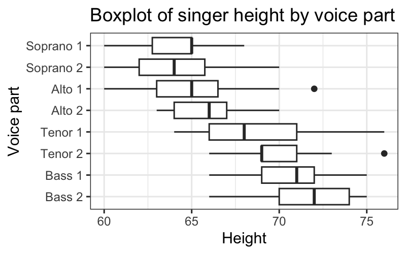
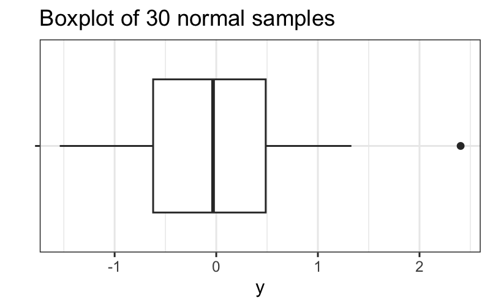
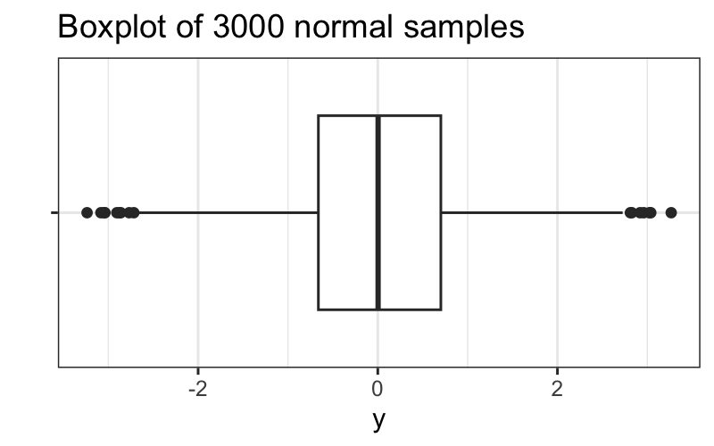

Julia Fukuyama
Our observations are \(x_1, \ldots, x_n\)
Sample mean: \[ \text{mean}(x_1,\ldots, x_n) = \frac{1}{n} \sum_{i=1}^n x_i \]
Standard deviation: \[ \text{sd}(x_1, \ldots, x_n) = \sqrt{\frac{1}{n-1} \sum_{i=1}^n (x_i - \text{mean}(x_1,\ldots, x_n))^2} \]
Let \(x_1, \ldots, x_n\) be a sample of size \(n\).
Suppose we add \(y_1, \ldots, y_m\) “bad” samples to \(x_1, \ldots, x_n\), to get a corrupted dataset \(x_1, \ldots, x_n, y_1, \ldots, y_m\).
We are interested in the value of a function \(f\) (e.g. the mean, \(f((x_1, \ldots, x_n)) = \sum_{i=1}^n x_i / n\)).
The breakdown point of the function \(f\) is \(\frac{m}{m+n}\) for the smallest value of \(m\) required to make \(f((x_1, \ldots, x_n, y_1, \ldots, y_m))\) arbitrarily different from \(f(x_1, \ldots, x_n)\).
Functions with high breakdown points are robust, insensitive to corruption and outliers.
Suppose our sorted observations are \(x_{(1)}, \ldots, x_{(n)}\)
Why would we want to use a less robust estimator?
There are two “pipe” operations in R, with minor differences between them.
Base R has |> and magrittr has
%>%.
In words: “Pipe the output of the last function as input to the next function”.
Suppose f1 and f2 are functions. These are
equivalent:
f2(f1(x))f1(x) %>% f2()The output of f1(x) is used as the first argument to
f2.
dplyr makes it easy to compute data summaries.
The summarise function will compute a summary statistic of one of the variables in the data table.
If you call group_by before summarise, summarise will compute the statistic for each value of the grouped variable.
## median(height)
## 1 67## median(height)
## 1 67## # A tibble: 8 × 2
## voice.part `median(height)`
## <fct> <dbl>
## 1 Bass 2 72
## 2 Bass 1 71
## 3 Tenor 2 69
## 4 Tenor 1 68
## 5 Alto 2 66
## 6 Alto 1 65
## 7 Soprano 2 64
## 8 Soprano 1 65## # A tibble: 8 × 2
## voice.part `median(height)`
## <fct> <dbl>
## 1 Bass 2 72
## 2 Bass 1 71
## 3 Tenor 2 69
## 4 Tenor 1 68
## 5 Alto 2 66
## 6 Alto 1 65
## 7 Soprano 2 64
## 8 Soprano 1 65Goal:
Suppose our data is \(x_1, \ldots, x_n\). We compute five statistics of the data:
\[r =q_x(.75) - q_x(.25)\]
\[\text{UAV} = \text{max} \{ x_i : x_i \le q_{.75} + 1.5r \}\]
\[\text{LAV} = \text{min} \{ x_i : x_i \ge q_{.25} - 1.5r \}\]
Note that these are all robust statistics
We can make a boxplot of just one variable, but only by hacking the syntax a bit (because the primary purpose of a boxplot is to compare multiple distributions).
More useful is to compare boxplots of the different voice parts.
ggplot(singer, aes(x = voice.part, y = height)) +
geom_boxplot() +
coord_flip() +
ggtitle("Boxplot of singer height by voice part") +
ylab("Height") + xlab("Voice part")
How should we think about upper and lower adjacent values?
We can compute them for normally distributed data:
## [1] 1.34898We can also ask what the probability any single point is an outside point for normally distributed data:
## [1] 0.006976603Or the probability of at least one outside point if we have 30 observations:
## [1] 0.1894414Or the probability of at least one outside point if we have 3000 observations
## [1] 1Note: These are approximations, we’re computing the probability that we get a point outside of the range of the large-sample upper- and lower-adjacent values, which is slightly different than the probability of an outside point. If you want a good math problem you might have fun working out the true probabilities, but otherwise the approximation is good enough for training our intuition.
We saw that if we have 30 observations, we don’t expect many outside values from normally distributed data:
set.seed(0)
df = data.frame(y = rnorm(30), x = "")
ggplot(df) +
geom_boxplot(aes(x = x, y = y)) +
coord_flip() + xlab("") + ggtitle("Boxplot of 30 normal samples")
But if we have 3000 observations, we expect to get a lot:
set.seed(0)
df = data.frame(y = rnorm(3000), x = "")
ggplot(df) +
geom_boxplot(aes(x = x, y = y)) +
coord_flip() + xlab("") + ggtitle("Boxplot of 3000 normal samples")
Reading: http://r4ds.had.co.nz/tidy-data.html
Tidy data means:
## # A tibble: 6 × 4
## country year cases population
## <chr> <dbl> <dbl> <dbl>
## 1 Afghanistan 1999 745 19987071
## 2 Afghanistan 2000 2666 20595360
## 3 Brazil 1999 37737 172006362
## 4 Brazil 2000 80488 174504898
## 5 China 1999 212258 1272915272
## 6 China 2000 213766 1280428583## # A tibble: 12 × 4
## country year type count
## <chr> <dbl> <chr> <dbl>
## 1 Afghanistan 1999 cases 745
## 2 Afghanistan 1999 population 19987071
## 3 Afghanistan 2000 cases 2666
## 4 Afghanistan 2000 population 20595360
## 5 Brazil 1999 cases 37737
## 6 Brazil 1999 population 172006362
## 7 Brazil 2000 cases 80488
## 8 Brazil 2000 population 174504898
## 9 China 1999 cases 212258
## 10 China 1999 population 1272915272
## 11 China 2000 cases 213766
## 12 China 2000 population 1280428583## # A tibble: 6 × 3
## country year rate
## <chr> <dbl> <chr>
## 1 Afghanistan 1999 745/19987071
## 2 Afghanistan 2000 2666/20595360
## 3 Brazil 1999 37737/172006362
## 4 Brazil 2000 80488/174504898
## 5 China 1999 212258/1272915272
## 6 China 2000 213766/1280428583## # A tibble: 3 × 3
## country `1999` `2000`
## <chr> <dbl> <dbl>
## 1 Afghanistan 745 2666
## 2 Brazil 37737 80488
## 3 China 212258 213766## # A tibble: 3 × 3
## country `1999` `2000`
## <chr> <dbl> <dbl>
## 1 Afghanistan 19987071 20595360
## 2 Brazil 172006362 174504898
## 3 China 1272915272 1280428583Problem: some of the column names are not names of variables, but values of a variable
To solve this problem, we need to pivot longer. To describe that operation, we need three parameters:
## # A tibble: 3 × 3
## country year cases
## <chr> <chr> <dbl>
## 1 Afghanistan 1999 745
## 2 Afghanistan 2000 2666
## 3 Brazil 1999 37737## # A tibble: 3 × 3
## country year cases
## <chr> <chr> <dbl>
## 1 Afghanistan 1999 745
## 2 Afghanistan 2000 2666
## 3 Brazil 1999 37737Problem: an observation is scattered across multiple rows.
To solve this problem, we need to pivot wider. To describe that operation, we need two parameters:
## # A tibble: 12 × 4
## country year type count
## <chr> <dbl> <chr> <dbl>
## 1 Afghanistan 1999 cases 745
## 2 Afghanistan 1999 population 19987071
## 3 Afghanistan 2000 cases 2666
## 4 Afghanistan 2000 population 20595360
## 5 Brazil 1999 cases 37737
## 6 Brazil 1999 population 172006362
## 7 Brazil 2000 cases 80488
## 8 Brazil 2000 population 174504898
## 9 China 1999 cases 212258
## 10 China 1999 population 1272915272
## 11 China 2000 cases 213766
## 12 China 2000 population 1280428583## # A tibble: 6 × 4
## country year cases population
## <chr> <dbl> <dbl> <dbl>
## 1 Afghanistan 1999 745 19987071
## 2 Afghanistan 2000 2666 20595360
## 3 Brazil 1999 37737 172006362
## 4 Brazil 2000 80488 174504898
## 5 China 1999 212258 1272915272
## 6 China 2000 213766 1280428583